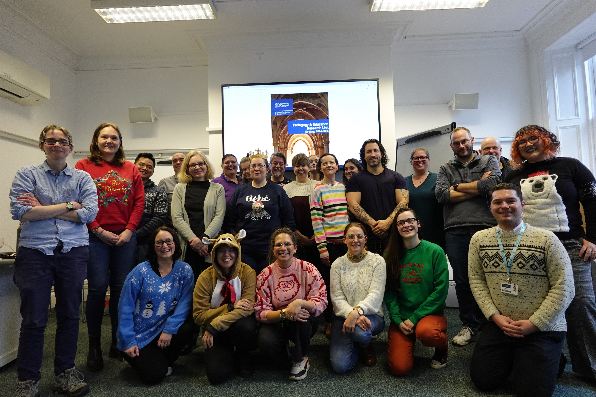

From PERU, with love
Today was my last official event as Centre Head for the Pedagogy and Education Research Unit (PERU), and I wanted to take the opportunity to talk about why I think organisations like PERU are so important for education-focused academics and to summarise what we’ve done over the last two years, and why, in the hope it might provide a template for others. If you’re interested in keeping up with PERU after reading this, you can follow us on LinkedIn.
PERU was formally established in 2022 as a response to our unique position as a very large LTS (Learning, Teaching, and Scholarship) team - I believe that the School of Psychology and Neuroscience is the biggest LTS team at the University of Glasgow with more than 30 full-time, permanent members of staff and I imagine we’re also one of the largest in the country.
We agreed on our structure and wrote our strategy through a series of collaborative workshops where we worked together to define PERU’s purpose and values and after several iterations and much discussion, settled on three research themes:
- Applied Cognition and Learning in Teaching, which focuses on evidence-based strategies to enhance student engagement and learning outcomes.
- Access, Inclusion, and Wellbeing, which centres on equity, accessibility, and fostering a supportive environment for both staff and students.
- Open Science and Pedagogy, which champions transparency, reproducibility, and the development of open educational resources.
It was also really important to me that we had a full strategy, so in a later activity, we formalised our values:,
- Collaboration and Support: At its core, PERU aims to provide a community of support and promote professional development through collaboration, transparency, trust, and fairness.
- Openness: All work conducted by PERU embraces openness, either through the adoption of open scholarship practices in our research, or by ensuring our work is available as an open educational resource.
- Inclusivity and Accessibility: Enhancing student and staff experiences by breaking down barriers to accessibility and fostering a sense of belonging is a core value of not only what we work on, but how we work as a team by ensuring that all staff have the opportunity and resource to develop professionally.
- Integrity and Excellence: PERU is committed to upholding high standards of evidence-based scholarship and excellence in research. We prioritise quality over quantity and demand no less of our scholarship than would be expected of any other research field.
Set concrete outcomes:
- All LTS staff are research-active in an area that supports their professional development and the PERU strategy.
- Our work shapes educational practices and policies through the adoption of PERU research and outputs by others, nationally and internationally.
- We achieve national and international recognition through awards, promotions, and fellowships.
- We disseminate research findings through outlets such as peer-reviewed articles, national and international educational blogs, and external workshops and conference presentations.
- We secure sources of internal and external funding.
And agreed on what we needed in the form of enabling factors to achieve those outcomes, so that we could hold the School, and ourselves, to account:
- A fair and transparent workload model that ensures all LTS staff have time to conduct scholarship.
- Internal funding to support the development of research projects where other funding is not available, and to support dissemination and networking.
- Regular PERU sessions to help identify common themes and opportunities for collaboration.
- Continuous professional development and support, specific to the LTS track, and focused on scholarship and esteem across all grades.
Our formalisation as a unit has been essential in validating the LTS team as researchers and in making the distinction between our teaching and scholarship activity (I teach, but I am not a teacher, I am an LTS academic). We are different to the other research centres in that we don’t participate in the REF and we don’t have funding targets (well, other than those pesky tuition fees and student numbers) but it’s so important that we still have a seat at the table and I’m also grateful to have a very supportive Head of School in Prof. Kate Jeffrey.
In many other Schools and institutions, LTS academics work in much smaller teams which can limit opportunities for collaboration, and at worst, can be isolating. In those cases, institution-wide SoTL Networks that provide breadth of expertise, professional development, and a sense of community are vital. But our size makes us different. Whilst our student numbers have presented us with challenges for teaching (everything must be designed for scale), when it comes to our scholarship, our size gives us a rare opportunity to build a strong internal community within the School where collaboration, support, and professional identity can thrive.
And I think that this sense of identity and belonging is PERU’s greatest strength. It’s why when I hear people refer to themselves as part of PERU or talking about PERU to external colleagues it makes me so incredibly happy. It’s well-established that belonging is key to student success and that students tend to feel a greater sense of belonging to their School and subject rather than their University as a whole. Same goes for us. Identity and shared purpose and vision are so important, and they’re a big part of why we’ve been able to achieve so much. I will also note that you don’t have to be as big as us to organise into something like PERU, but this doesn’t detract from the point that the bigger you are, the more sense it makes to do so.
Formalising the structure of PERU has also allowed us to take full advantage of the School-level resources available. While many LTS teams across the sector operate with little to no support, we’re lucky to have a School management team and environment that supports us with conference and travel funds, and with project funds (in addition to institutional funding for Learning and Teaching Development, Scholarship, and Staff-Student Partnerships). Our research tends to be cheap in relative terms, but it doesn’t happen for free and to have impact it needs disseminated and to thrive we need professional development and networking opportunities. If institutions create education-focused tracks that don’t/can’t apply for grants but also expect high quality scholarship then they better be dammed well willing to support it. Glasgow isn’t perfect but in this I think we lead the sector in putting our money where our expectations are.
I’m incredibly proud of everything we’ve achieved. When PERU was first formed, I didn’t realise how much it would come to mean to me. I thought it would be just another admin role, but it’s been a source of immense joy. That said, it’s also absolutely the right time to hand it over to a fresh pair of eyes and I’m delighted to have Dr. Ashley Robertson take the lead. Her focus on supporting early-career colleagues and driving research outputs will build on what we’ve already established and I can’t wait to come along for the ride.
